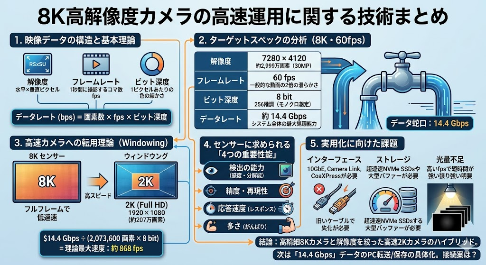

1. 光電変換の仕組み

物理原理：光電効果
イメージセンサーの各画素（フォトダイオード）は、光子を受け取ると電子を放出します。 この放出された電子を「バケツ」に溜め、その量を電圧として読み取ることで、光の強弱を正確なデジタル数値に変換します。 バケツが大きく、ノイズを極限まで抑え込むことが、高精度な画像認識の第一歩となります。
2. 代表的なセンサー方式の比較

現在、産業用カメラの主流は高速・低消費電力なCMOS方式です。 一方、画質の均一性や科学的な精密測定が求められる特殊な用途では、電荷をリレー形式で転送するCCD方式が依然として選ばれることもあります。
| 項目 | CMOSセンサー（主流） | CCDセンサー（従来型） |
|---|---|---|
| 読み出し原理 | 画素ごとに回路があり、高速に読み出す | 電荷をリレー形式で転送し、1箇所で増幅 |
| 読み出し速度 | 非常に速い | 比較的遅い |
| 消費電力 | 低い（省エネ） | 高い（発熱しやすい） |
| 主な用途 | スマートフォン、一眼レフ、産業用カメラ | 宇宙観測、医療用などの特殊用途 |
3. 赤外線センサー：冷却型と非冷却型

熱検知のメカニズム
目に見えない「熱（遠赤外線）」を捉えるには、温度上昇による抵抗変化を測る方法（熱型）と、光子を直接電子に変換する方法（量子型）があります。 用途に応じた精度の使い分けが重要です。
| 種類 | 非冷却型（マイクロボロメータ） | 冷却型（量子型） |
|---|---|---|
| 測定原理 | 熱型：赤外線による受熱体の「温度上昇」を測る | 量子型：赤外線の「光子」が電子を叩き出す |
| 冷却の有無 | 不要（常温で動作） | 必要（-200℃近くまで冷やす） |
| 感度・速度 | 中程度（定常的な熱監視に最適） | 極めて高い（瞬時に微細な差を検知） |
4. 8K高速運用に関する技術理論

映像データの構造と基本理論
デジタル映像のデータ量は、解像度・フレームレート・ビット深度の相関関係によって定義されます。
データレート (bps) = 画素数 × fps × ビット深度
8K・60fps ターゲットスペック分析
| 解像度 | 7280 × 4120 (約30MP) |
|---|---|
| データレート | 約 14.4 Gbps |
高速カメラへの転用（Windowing）
| 解像度 | 1920 × 1080 (2K) |
|---|---|
| 理論最大速度 | 約 868 fps |
5. 波長別：センサー選定・完全ガイド
短波長 (UV/X線)
裏面照射型CMOS
選定理由： エネルギーが強く、透過・散乱しやすいため、内部構造や微細なキズの検出に最適。
DX活用： 透明フィルム検査、鋳物内部空洞検知
可視光 (VIS)
一般CMOS (ベイヤー)
選定理由： 人の目に見える情報をそのままデータ化。目視工程を低コストでAIへ置き換える基盤。
DX活用： 梱包チェック、作業自動化
近赤外 (NIR/SWIR)
InGaAsセンサー
選定理由： シリコン透過や水分吸収特性を利用し、外観からは見えない「中身」を可視化。
DX活用： 基板越配線検査、液面判定